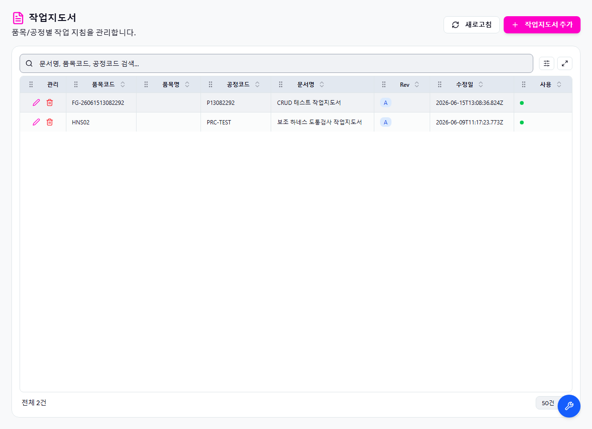

STEP 01
초기 조회
작업지도서관리 화면 진입과 초기 API 로딩을 확인합니다.
동작 처리
- 브라우저로 /master/work-instruction 경로에 진입한다.
- 업무 영역 렌더링과 초기 API 응답을 수집한다.
- 대표 DB 테이블 count를 확인한다.
API 호출
| 구분 | Method | URL | Status |
|---|---|---|---|
| ui-network | GET |
/api/db-info |
200 |
| ui-network | GET |
/api/auth/me |
200 |
| ui-network | GET |
/api/system/comm-configs?commType=SERIAL&useYn=Y |
200 |
| ui-network | GET |
/api/system/configs/active |
200 |
| ui-network | GET |
/api/menu-categories/tree |
200 |
| ui-network | GET |
/api/master/com-codes/all-active |
200 |
| ui-network | GET |
/api/master/work-instructions?limit=5000 |
200 |
DB 확인
| 검증 | SQL | 결과 |
|---|---|---|
| WORK_INSTRUCTIONS 대표 count | SELECT COUNT(*) AS CNT FROM WORK_INSTRUCTIONS WHERE ROWNUM <= 100000000 |
[
{
"CNT": 2
}
] |
